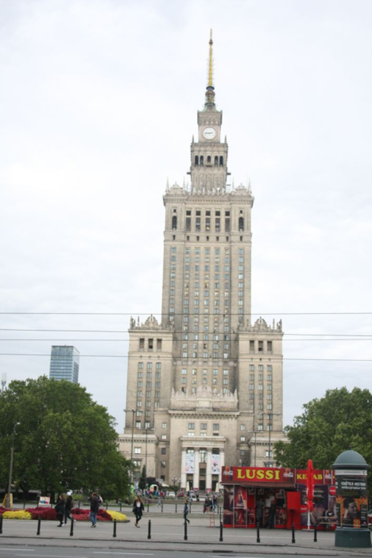

Schulpartnerschaft Köln-Warschau

Wie kam die Partnerschaft zustande?
In den politischen Umwälzungen seit 1989 öffnete sich der „eiserne Vorhang“, der Europa von Norden nach Süden trennte. In dieser veränderten politischen Lage suchte eine Warschauer Kollegin, Jadwiga Smirnow, Kontakt zu einer deutschen Schule und fand die Georg-Simon-Ohm- Schule. Seitdem besuchen wir uns jedes Jahr gegenseitig und organisieren so einen Austausch mit Schülerinnen und Schülern sowie Lehrerinnen und Lehrern.
Wie bereiten wir auf den Austausch vor?
- Informationsveranstaltungen in unterschiedlichen Schulklassen und Bildungsgängen mit Präsentation von Bildern und Filmen vergangener Austausche
- Es findet immer ein Vorbereitungsseminar statt: Deutsch-polnische Geschichte und Beziehungen, Ethikcodex für die Gruppe, reisepraktische Fragen…
- Gemeinsame Programmgestaltung mit polnischer Seite
Welche Ziele streben wir an?
- Aus ehemaligen Feinden werden Freunde
- Wir bauen nicht mehr zeitgemäße Vorurteile auf beiden Seiten ab und tragen vertrauensbildend zu einer neuen europäischen Partnerschaft bei
- Wir geben bilaterale Einblicke in das Verständnis von „Land und Leuten“
- Unterrichtsbesuche und Hospitationen an der Partnerschule
- Kontaktaufnahme mit polnischen Unternehmen zur Vermittlung von Schülerpraktika
- Wir eröffnen Begegnungsräume unter jungen Polen und Deutschen: Die jungen Menschen aus beiden Ländern organisieren wichtige Programmpunkte eigenverantwortlich
- Wir führen in die zwischenstaatlichen deutsch-polnischen Beziehungen ein
- Wir bringen Geschichte zur Sprache, weil wir die Überzeugung haben, dass wir nur so Anknüpfungen für das zukünftige Verhältnis junger Deutscher und Polen in Europa finden werden
- Wir öffnen Wege, damit junge Menschen die gewonnenen Kontakte und Freundschaften erhalten und pflegen
Wer fördert diese Begegnung ideell und finanziell?
- Betriebe, indem sie durch die Freistellung von Auszubildenden einen Betrag zur Völkerverständigung zwischen Deutschland und Polen einbringen
- Die Schulleitung durch Freistellung von zwei Lehrkräften während der Begegnungen
- Die Schülervertretung, weil sie sie immer wieder auf die Wichtigkeit dieser Beziehungen hinweist, was in der Protokollen der SV und Schulkonferenz nachgelesen werden kann
- Das Deutsch-polnische Jugendwerk mit einer Förderung von jährlich ca. 5.000,00 EUR
- Der Förderverein des Berufskollegs mit einem Betrag von jährlich ca. 1.000,00 EUR